愛看動漫、愛打遊戲，家裡有貓咪和守宮，也曾經在釜山吃遍街頭。這裡是我的日常。
認識我我是董鎧嘉，目前就讀嶺東科技大學資管系。我喜歡把喜歡的事情認真做好：看動漫放鬆、打遊戲和朋友聊天、回家照顧我的毛孩。
去過釜山之後，我更愛用旅行的方式去認識不同的生活。這個網站整理了我的日常、興趣、寵物與旅行回憶，歡迎慢慢逛。
第一件事是先餵貓咪，再檢查守宮的環境。
運用AI快速完成老師交代的功課。
跟同學聊天、滑滑手機，跟朋友出去吃飯。
運用AI快速完成老師交代的功課。
打工的時間。
寫完該做的事，才能安心追番、打遊戲、睡覺，這是一天最放鬆的時段。
動漫是我最快的放鬆方式，喜歡劇情有深度、角色有成長的作品。
遊戲是我跟朋友聯繫的方式，也是解壓的方法
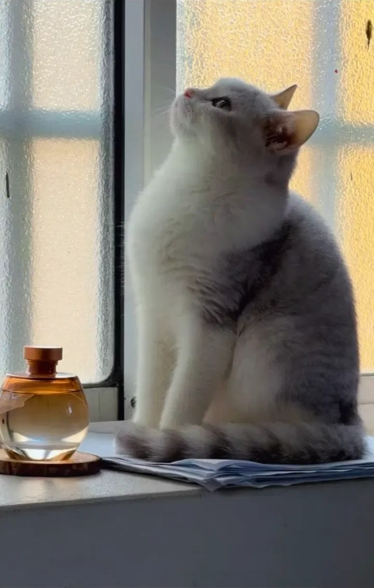
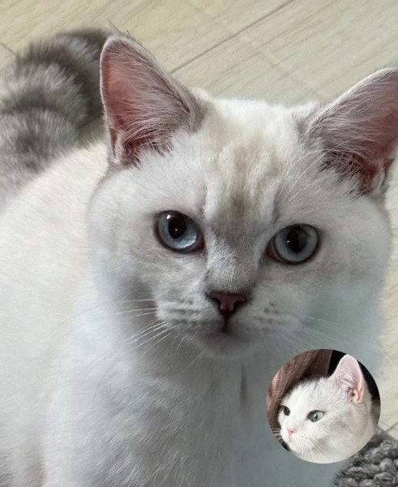
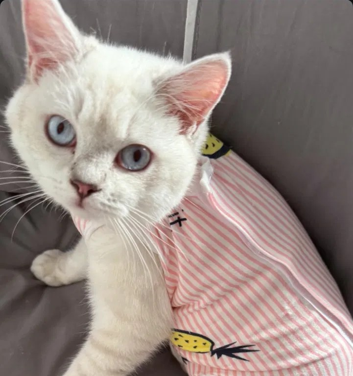
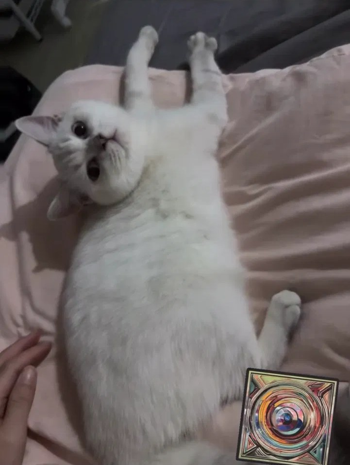
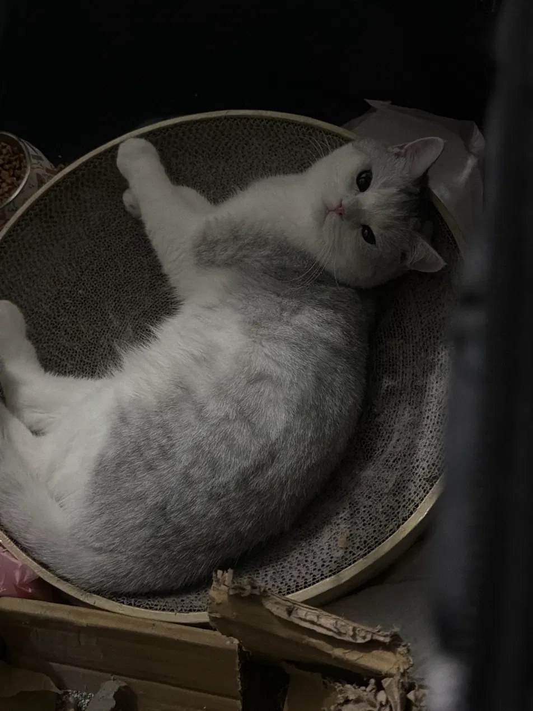
【愛撒嬌、每天早上準時叫我起床，最喜歡窩在我的腿上睡覺】
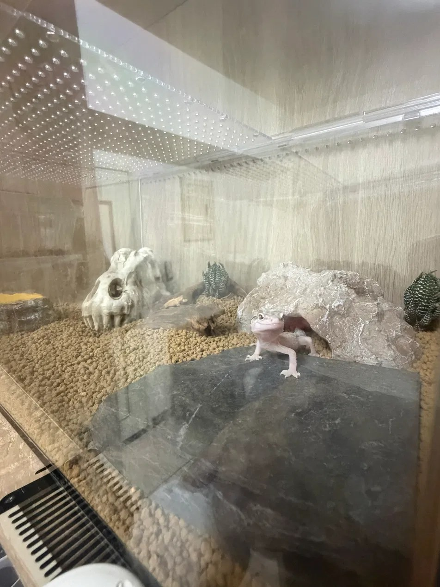
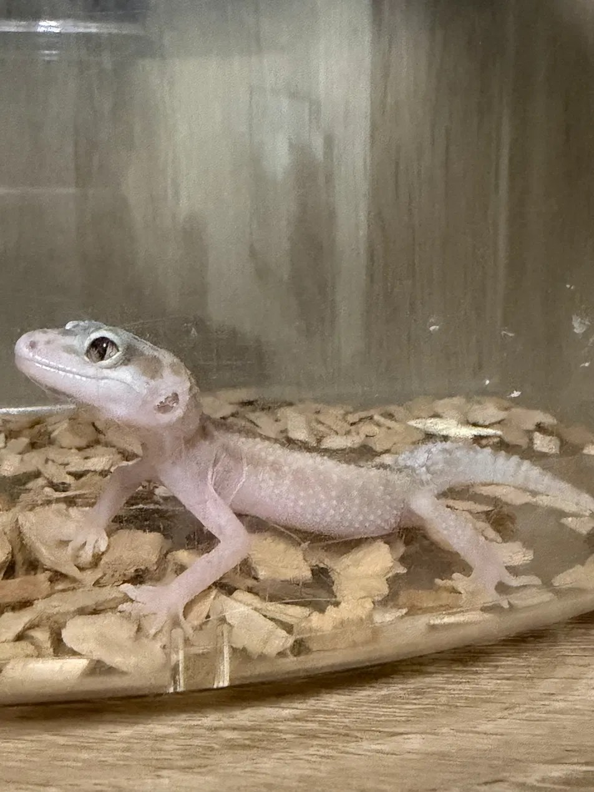
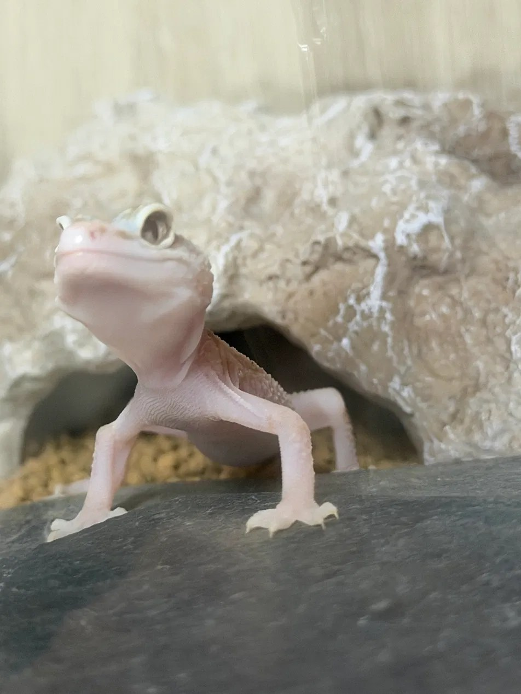
【吃蟋蟀的時候特別有精神，白天躲起來睡覺，晚上最活躍】
釜山是韓國第二大城市，有海、有山、有彩色的山城小屋，也有說不完的街頭美食。
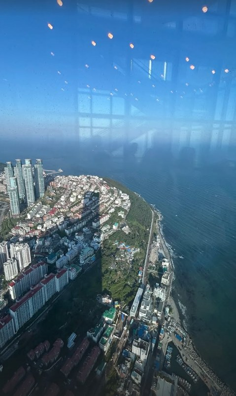
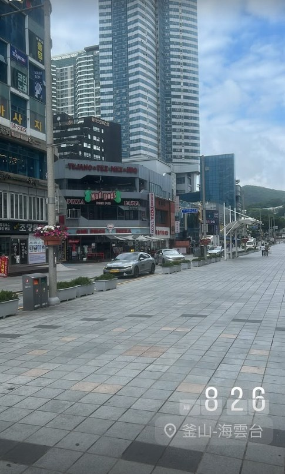
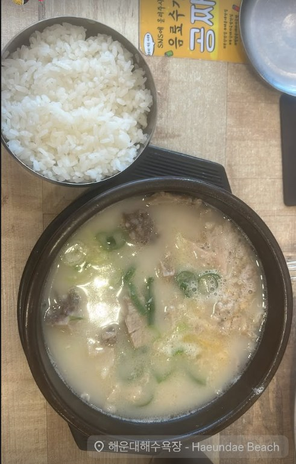
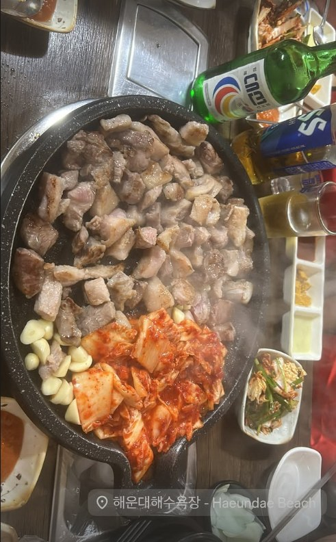
好的旅行不是去了多少地方，而是回來之後，還會想念那碗熱湯和那片海。— 董鎧嘉